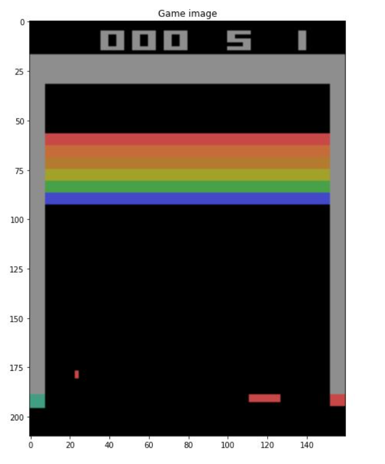
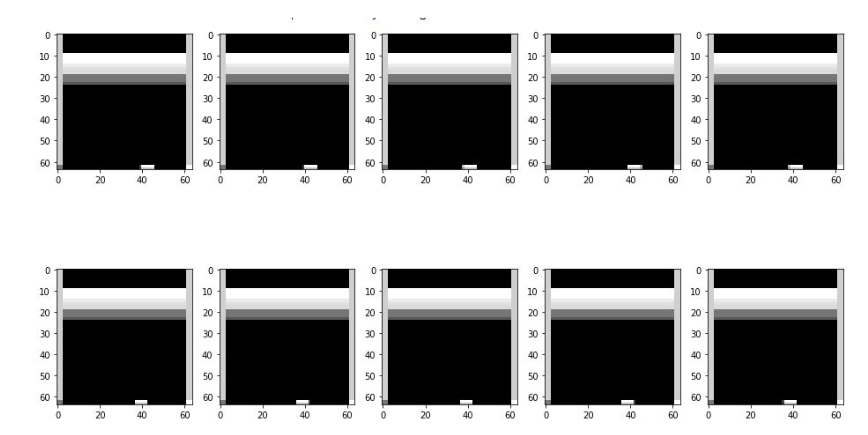
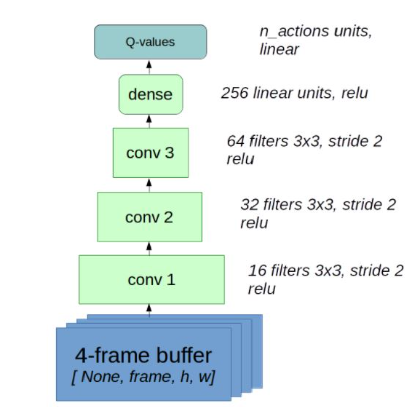
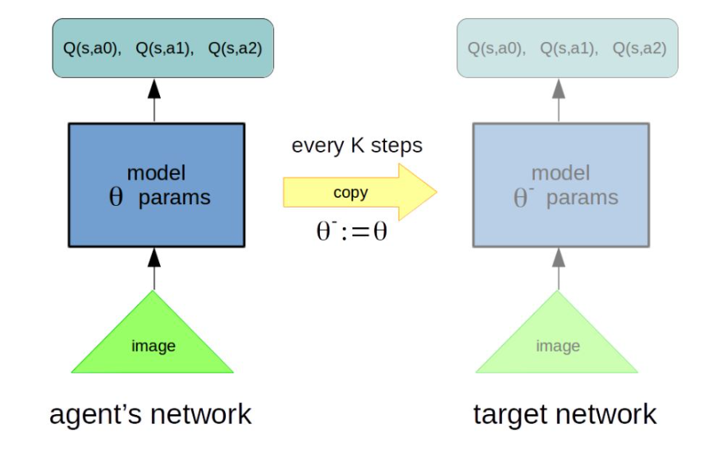

<div id="portfolio-page" class="portfolio-page-content">
    <div class="container">
        <div class="portfolio-nav">
            <div id="portfolio-close-button" class="portfolio-close-button">
                <a href="#portfolio"><i class="fa fa-close"></i></a>
            </div>
        </div>

        <div class="portfolio-title">
            <h1>Portfolio Project</h1>
        </div>

        <div class="row">
            <div class="col-sm-7 col-md-7 portfolio-block">
                <div class="owl-carousel portfolio-page-carousel">
                    <div class="item">
                        
                    </div>
                    <div class="item">
                        
                    </div>
                    <div class="item">
                        
                    </div>
                    <div class="item">
                        
                    </div>
                </div>

                <div class="portfolio-page-video embed-responsive embed-responsive-16by9">
                  <iframe class="embed-responsive-item" src="https://youtu.be/C3tqwUvX8P8?autoplay=0"></iframe>
                </div>

                <!--
                <div class="portfolio-page-image">
                    
                </div>
                -->

                <script type="text/javascript">
                    jQuery(document).ready(function($){
                        $('.portfolio-page-carousel').owlCarousel({
                            smartSpeed:1200,
                            items: 1,
                            loop: true,
                            dots: true,
                            nav: true,
                            navText: false,
                            margin: 10
                        });
                    }); 
                </script>
            </div>

            <div class="col-sm-5 col-md-5 portfolio-block">
                <!-- Project Description -->
                <div class="block-title">
                    <h3>Description</h3>
                </div>
                <ul class="project-general-info">
                    <li><p><i class="fa fa-user"></i> Arezoo Alipanah</p></li>
                    <li><p><i class="fa fa-globe"></i> <a href="https://github.com/ArezooAalipanah/RL_Examples/tree/main/week4_approx" target="_blank">Github repository</a></p></li>
                    <li><p><i class="fa fa-calendar"></i> 2021</p></li>
                </ul>

                <p class="text-justify">In this project, a deep Q-network is implemented using experience replay and target networks to 
                    train a 2600 VCS Breakout Atari game. The coding has been done both in Tensorflow and Pytorch frameworks. 
                    At first, a preprocess on the input images is done, and they are cut to make the process easier with fewer amounts of data. 
                    Then, a greyscale is added to the images to reduce the processing time for training. 
                    A frame buffer is considered based on this article to be used on the experience replay. 
                    The CNN network has four dense convolutional layers and one output layer for the Q values. 
                    which would be called on every agent's step. Using target networks as reference Q-values, Q-learning TD error is computed. 
                    After that, using the Adam Optimizer, the agent has trained for about 75k steps. Finally, after reaching a reward of almost 
                    13 or 14 per every life, the training is stopped.</p>
                <!-- /Project Description -->

                <!-- Technology -->
                <div class="tags-block">
                    <div class="block-title">
                        <h3>Technology</h3>
                    </div>
                    <ul class="tags">
                        <li><a>Jupyter Notebook</a></li>
                        <li><a>Pytorch</a></li>
                        <li><a>Python</a></li>
                        <li><a>TensorFlow</a></li>
                        <li><a>Keras</a></li>
                    </ul>
                </div>
                <!-- /Technology -->

                <!-- Share Buttons 
                <div class="btn-group share-buttons">
                    <div class="block-title">
                        <h3>Share</h3>
                    </div>
                    <a href="#" target="_blank" class="btn"><i class="fa fa-facebook"></i> </a>
                    <a href="#" target="_blank" class="btn"><i class="fa fa-twitter"></i> </a>
                    <a href="#" target="_blank" class="btn"><i class="fa fa-dribbble"></i> </a>
                </div>
                </Share Buttons -->

                
            </div>
        </div>
    </div>
</div>
